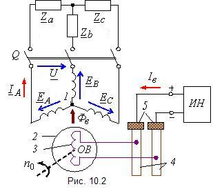

|
Синхронная машина, принципиальная схема устройства которой приведена на рис. 10.1, а, состоит из статора (якоря) 1 и ротора (индуктора) 2.  Статор синхронной машины принципиально устроен так же, как и статор асинхронной машины. В пазах статора размещается многофазная (обычно трёхфазная) обмотка 1 (рис. 10.2). Фазы обмотки, как правило, соединяют в звезду. Магнитодвижущие силы фазных обмоток статора создают вращающееся магнитное поле Фв машины. Явнополюсный ротор (рис. 10.1, а) представляет собой электромагнит 2, обмотка 3 которого питается постоянным током через два контактных кольца 4 и щетки 5 от постороннего источника напряжения ИН и называется обмоткой возбуждения (ОВ) (рис. 10.2). Ток Iв создаёт магнитный поток возбуждения Фв. В качестве источника постоянного напряжения ИН (возбудителя) используют генератор постоянного тока, располагаемый на одном валу с ротором синхронной машины, или вентильный выпрямитель с щёточной или безщёточной системой возбуждения. Неявнополюсный
ротор (рис. 10.1, б) состоит из
сердечника 1, изготавливаемого из углеродистой или легированной
стали, и обмотки возбуждения 2, распределённой по нескольким пазам
ротора таким образом, чтобы получить синусоидальную по форме магнитную
индукцию В в зазоре машины. |